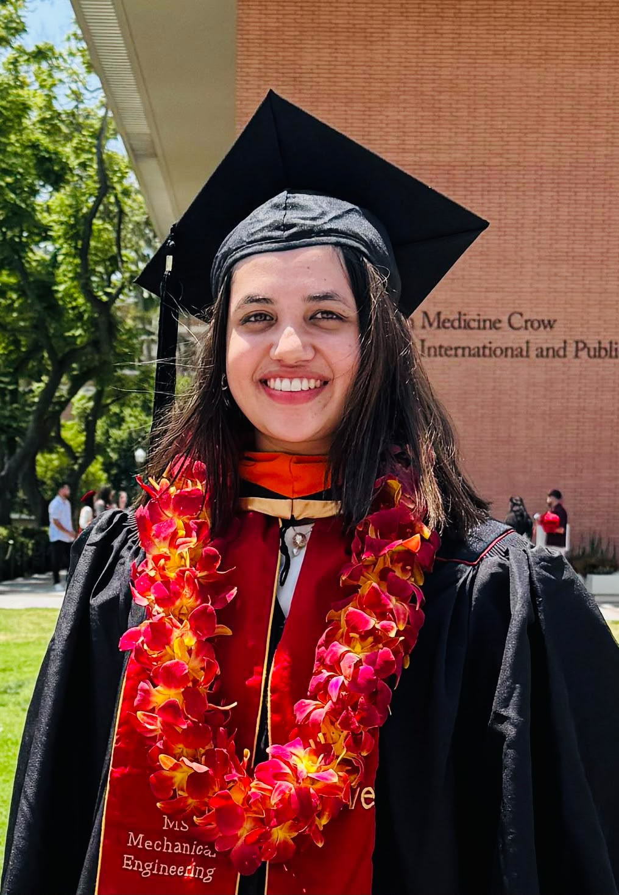
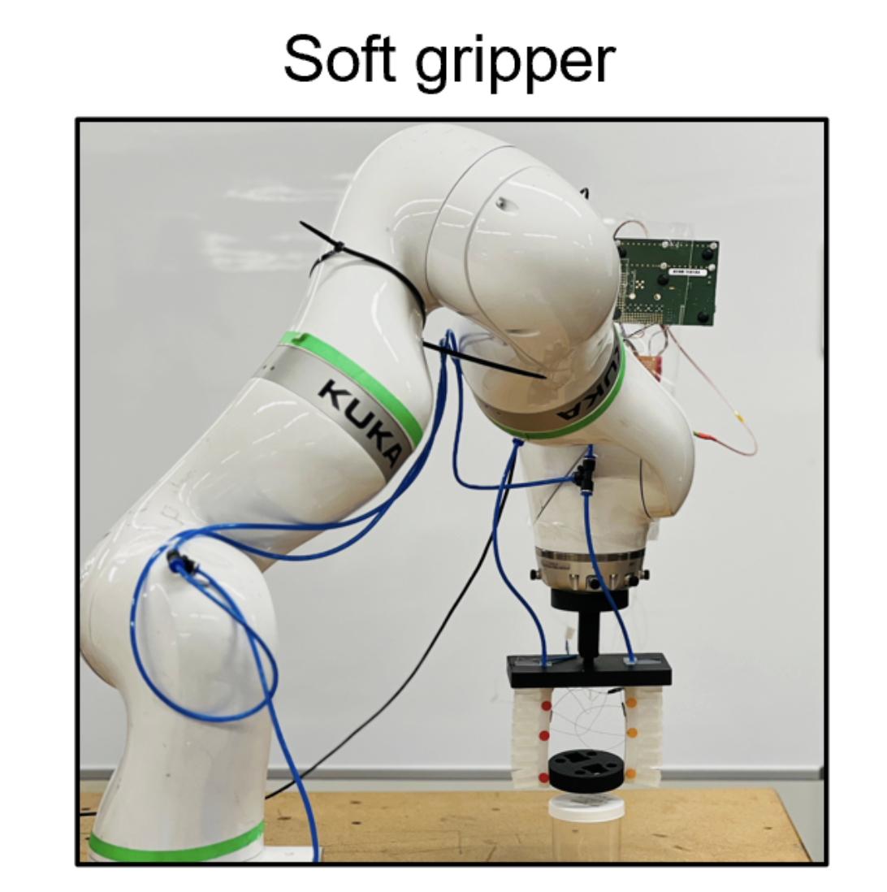
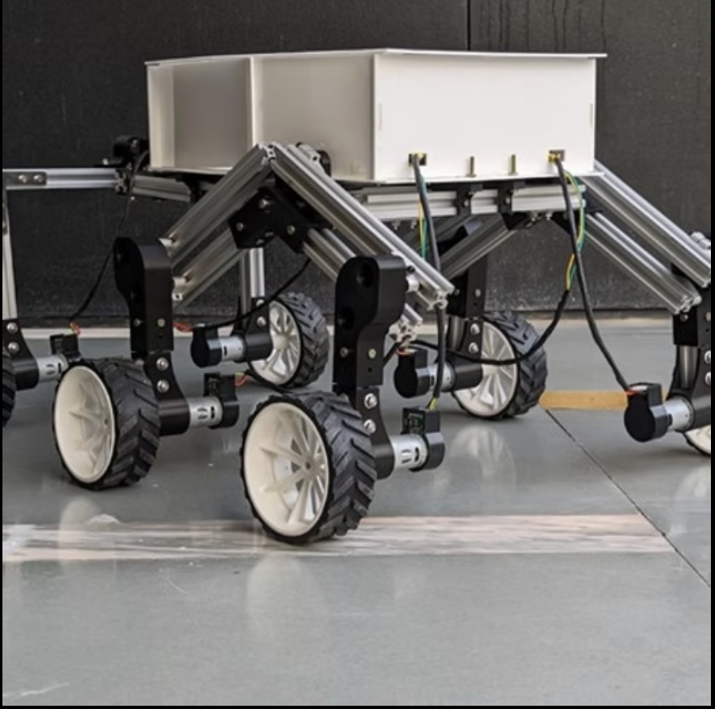
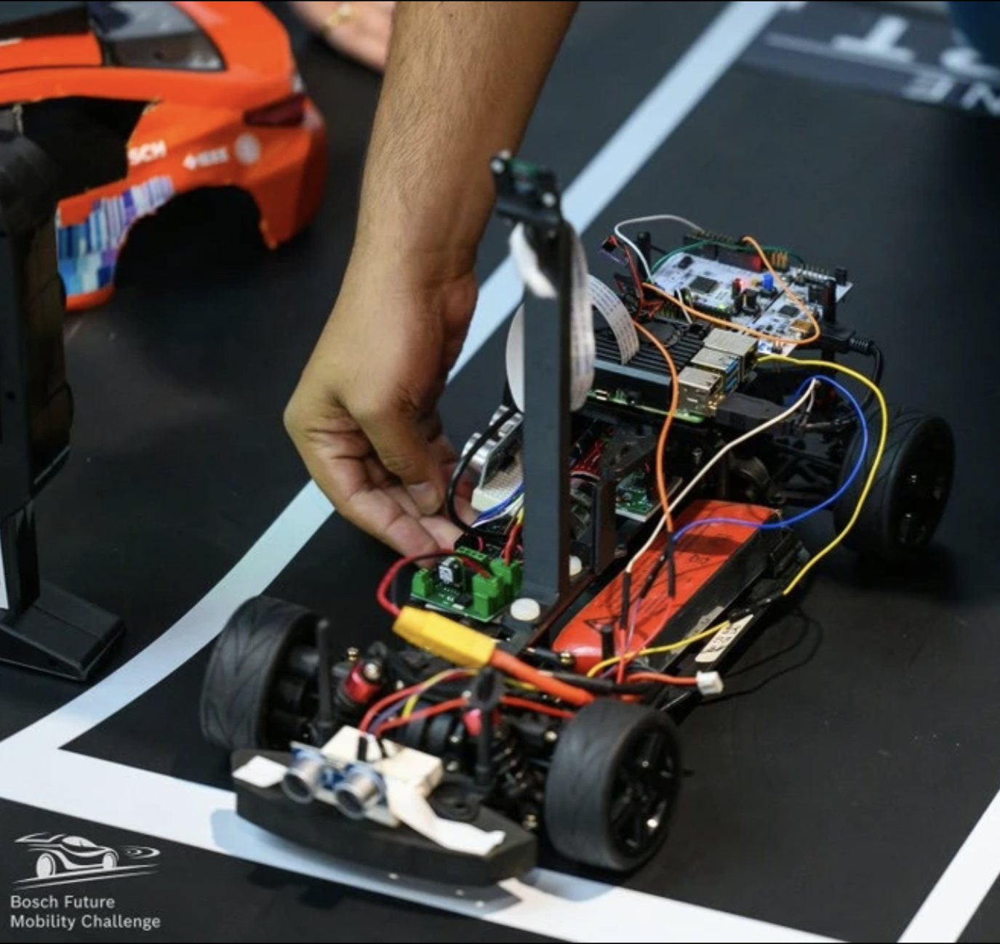

August 2023 - May 2025
University of Southern California
M.S. Mechanical Engineering · Robotics and Control Systems · GPA 3.81/4.0
Robotics · Controls · Systems V&V
Hi, I am Vedanshee. I am a mechanical engineer focused on robotics, controls, embedded validation, and hands-on debugging. I like the messy middle where hardware, software, and physics all have to agree.

Education
August 2023 - May 2025
M.S. Mechanical Engineering · Robotics and Control Systems · GPA 3.81/4.0
July 2019 - June 2023
B.Tech Mechanical Engineering · University Gold Medalist · GPA 3.63/4.0
About
I have worked on autonomous mobile robots, pneumatic soft-robot actuation, embedded communication benches, HiL validation tools, and industrial field robotics. The common thread is simple: understand the physics, instrument the system, test the behavior, and use data to make the next version better.
My background combines graduate robotics training at USC, a mechanical engineering foundation from Ahmedabad University, internships in robotics and electronic systems testing, and current system-level V&V work on safety-critical electromechanical platforms.
Experience
System validation, automated test tooling, and robotics platform integration across medical, industrial, and engine-control environments.
Highlighted Projects
A short look at the hardware, controls, navigation, and testing work behind some of my favorite projects.

Soft robotics · Pneumatics · PID
I built a pneumatic control system for a four-chamber soft robot arm using pressure feedback, flow valves, and real-time PID control.
Open project notes
Navigation · Suspension · Control
I worked on a GPS-localized autonomous rover with inverse double-lambda suspension, A* path planning, and Pure Pursuit heading control.
Open project notes
Autonomous mobility · Competition
I helped build autonomous mobility behavior for a global competition where reliability mattered as much as the idea.
Open project notesPublications
Soft Robotics 12(6) · 2025
Liu L., Huang X., Zhang X., Zhang B., Xu H., Trivedi V.M., Liu K., Shaikh Z., Zhao H.
Submitted · 2026
Liu, L., Gong, J., Dou, Y., Trivedi V.M., Chen, L.Y., Li, Y., Zhao, H.
Skills
Beyond engineering
I have been to 24 countries so far, and I am always quietly planning the next one.
My comfort show is Gilmore Girls. It is basically a personality test at this point.
I love doing Zumba. It is my favorite way to reset after a long week.
Contact
I am always happy to talk through roles, collaborations, research ideas, or project context.